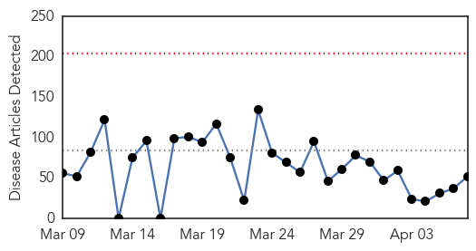
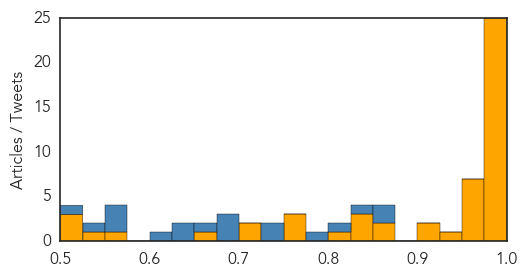
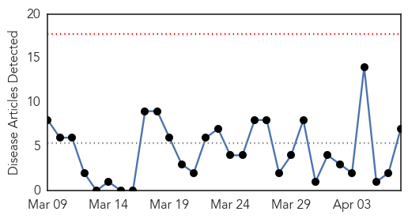
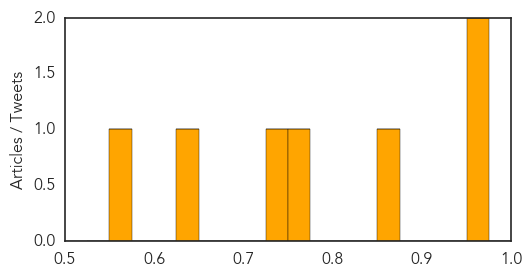

Ebola
30-Day Web Trend
0 alerts, 0 warnings

30-Day Twitter Trend
0 alerts, 0 warnings

Article Locations

Article Confidences
Top Articles:
- 1.000
- 'Safety is our promise'
- 1.000
- UPDATE: U.S. Ebola Patient Fully Recovered, Leaves Hospital -
- 1.000
- 1982 study suggested Ebola was in Liberia then
- 0.999
- Is Sierra Leone Facing Ebola Outbreak Anew?
- 0.999
- Baby dies of Ebola in Sierra Leone area where outbreak started
- 0.999
- Guinea Seen As Best Hope For Preventative Drug Trials, But Time Is Running Out
- 0.999
- Persistence of Ebola Virus in Body Fluids
- 0.998
- Health Workers on Ebola Frontlines Serve Countries, Risk Own Lives
- 0.997
- Waikato nurse sees Ebola first hand
- 0.996
- Let's Care for Ebola Orphans As Much As Bentley
- 0.995
- Once an afterthought in trial planning, Guinea may provide Ebola vaccine answers
- 0.995
- Ebola: Police raid funeral and arrest 13 in Sierra Leone for organising unsafe burial
- 0.995
- Western Media Overlooks Africa Role in Fighting Ebola Disease
- 0.995
- Once an afterthought in trial planning, Guinea may provide Ebola vaccine answers
- 0.994
- Ebola: German ministers talk up economic recovery in West Africa
- 0.993
- Ebola-hit Sierra Leone arrests 13 at unsafe burial: police
- 0.993
- Ebola-hit Sierra Leone arrests 13 at unsafe burial: police - Sierra Leone
- 0.993
- Ebola-hit Sierra Leone arrests 13 at unsafe burial
- 0.992
- News Scan for Apr 06, 2015
- 0.987
- Ebola-like outbreaks to become more frequent in the future, warns UN…(They’ll Make Sure!)
- 0.986
- NIH ebola patient improving
- 0.983
- Kailahun baby was not Ebola positive – says NERC’s Palo Conteh
- 0.977
- Hunting Ebola in Freetown: A day in the life of an epidemiologist
- 0.977
- Dallas hospital seeks dismissal of nurse's suit over Ebola
- 0.975
- At Porous Liberia Border, Vigilant People Prevent Spread of Ebola
- 0.967
- I wish I could have touched Ebola patients - SA nurse
- 0.959
- Sick airline passenger taken to Hackensack University Medical Center as precaution
- 0.959
- WHO focuses on food safety
- 0.959
- Baby dies of Ebola in SLeone area where outbreak started
- 0.957
- U.S. Health Care Worker With Ebola Upgraded to Good Condition
- 0.957
- Scientist Hatches Plan to Prevent Next Disease Outbreak
- 0.951
- Courthouse News Service
- 0.932
- Minneapolis receives Ebola preparation funds
- 0.923
- Health Stakeholders Confer on Building a ‘Resilient Health System’ Post-Ebola
- 0.915
- Health crises need real-time reporting of good practice
- 0.861
- Texas Hospital Seeks Dismissal of Ebola Lawsuit
- 0.859
- SIERRA-LEONE AND THE EBOLA CRISIS.
- 0.838
- RFA Argus returns to home waters after Ebola fight
- 0.831
- Sierra Leone: Health Workers on Ebola Frontlines Serve Countries, Risk Own Lives
- 0.827
- Mary Broh Action ‘rude, disrespectful’
- 0.803
- After 3 days sit at home…Ebola will soon be defeated – NERC « Awoko Newspaper
- 0.771
- For Ebola patients, a way to see the faces of those helping
- 0.754
- ‘We must reform WHO now’, says UK chief medical officer
- 0.751
- Exclusive interview with Honourable Maya Kaikai (Final Part)
- 0.719
- Ebola aid ship Argus welcomed home to Falmouth
- 0.709
- Pakistani UN Volunteer wins Villagers’ hearts in Kambia « Awoko Newspaper
- 0.673
- Pakistani UN Volunteer Wins Villagers’ Hearts In Kambia
- 0.560
- Sierra Leone News: Kenema District records 95% compliance during 3 days sit-at-home « Awoko Newspaper
- 0.531
- Ebola survivors stand tall in Sierra Leone - Sierra Leone
- 0.516
- Ebola doctor to speak at Centenary commencement
Showing top 50 articles...
Top Tweets:
- 0.975
- At Porous Liberia Border, Vigilant People Prevent Spread of Ebola - Voice of America http://t.co/cBCxuOOpFe ebola EVD
- 0.970
- Guinea may provide Ebola vaccine answers - CTV News http://t.co/T9sBFqOTNu ebola EVD
- 0.958
- At a Porous Border, Vigilant People Prevent Spread of Ebola - Voice of America http://t.co/9V0BzlpSgi ebola EVD
- 0.940
- Ebola: German ministers talks up economic recovery in West Africa - Deutsche Welle http://t.co/HmId68LqQD ebola EVD
- 0.937
- Ebola doctor to speak at Centenary commencement - Shreveport Times http://t.co/IEN3OYCz86 ebola EVD
- 0.910
- Liberia's Early Ebola Response in Ganta Shows Resilience - Voice of America http://t.co/x1U04jPss1 ebola EVD
- 0.897
- Ebola-hit Sierra Leone arrests 13 at unsafe burial: police - Yahoo News http://t.co/A3fzOPL1uw ebola EVD
- 0.863
- According to the latest figures from WHO,Guinea reported 45 new Ebola cases and Sierra Leone 33. AfricaAgainstEbola
- 0.852
- Ebola Vaccine 2015: Guinea Seen As Best Hope For Preventative Drug Trials ... - International Busi... http://t.co/M0QJSaJYFh ebola EVD
- 0.841
- Charlotte Ebola Survivor Returns to Liberia - TWC News http://t.co/ZMjhTNGTap ebola EVD
- 0.840
- Ebola: media 'overlooked Africa's role in combating crisis' - The Guardian http://t.co/j5RI5PtIxB ebola EVD
- 0.821
- Why Do Sierra Leonean and American Clinicians With Ebola Get Such Different ... - Slate Magazine http://t.co/C21X7JqM9O ebola EVD
- 0.790
- Yes, We Were Warned About Ebola - New York Times http://t.co/uFgmLCBsTJ ebola EVD
- 0.784
- LISTEN: Sidie is 1 of nearly 900 health workers infected during the Ebola oubtreak EbolaResponse https://t.co/wb6Zf1uawi
- 0.726
- Pour une prise en charge médicale adaptée des patients atteints d'Ebola http://t.co/JOrzxKXlST
- 0.713
- SierraLeone. Beyond 90 Days: Persistence of Ebola Virus in Body Fluids http://t.co/yXnHvlGUBr
- 0.698
- RT: As Liberia goes18 days with no new Ebola cases, SierraLeone today records three new cases in Freetown & Kambia on borde…
- 0.697
- Ebola in Liberia - http://t.co/Apttzythkn
- 0.678
- RT: SierraLeone Ebola centre says case of the baby in Kailahun whose swab result claimed he died of the virus "was a mistake…
- 0.673
- Carte. Guinée. Répartition du nombre d’orphelins et de décès dus à Ebola par préfecture https://t.co/xfj6MDS8ae
- 0.663
- Guinea has closed it's border with Sierra Leone in an effort to stem the spread of Ebola. http://t.co/YiO8fhw0nP
- 0.651
- Bundesregierung plant Sonderhilfsprogramm gegen Ebola - http://t.co/P40aws1EA1 http://t.co/Xcdh0Y04nX ebola EVD
- 0.640
- In Guinea as of April 1: 57 confirmed cases of Ebola (up from last week); geographical area of transmission also increased via
Cholera
30-Day Web Trend
0 alerts, 0 warnings

30-Day Twitter Trend
0 alerts, 0 warnings

Article Locations

Article Confidences
Top Articles:
- 0.974
- Beware of summer diseases, docs say
- 0.961
- LG Electronics : AND IVI CONDUCT CHOLERA VACCINATION CAMPAIGN IN ETHIOPIA 2015-04-07
- 0.874
- Six killed during heavy rains
- 0.768
- Nigeria: Eradicating waterborne diseases
- 0.730
- Yemen: UN relief agencies rush assessment teams, supplies to crisis-torn country
- 0.631
- WHO Estimates 2m Death From Unsafe Food Annually
- 0.552
- Making food safe from farm to plate
Top Tweets:
- 0.666
- RT: On WorldHealthDay, take a look at our map of cholera outbreaks in Haiti & NYC by http://t.co/vUM6BZItaI htt…